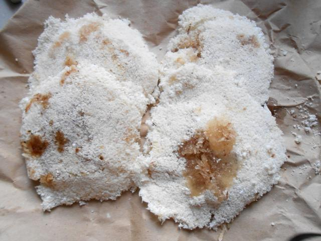

Saveurs Antillaise
Les saveurs guadeloupéennes se démarquent par un assaisonnement pimenté, accentuant le goût et le parfum des mets. Cela provient des Arawaks, des Amérindiens d’Amazonie qui ont également apporté la fameuse cassave. Compte tenu de la situation de l’archipel, la consommation des produits de la mer s’est naturellement instaurée. Les Indiens des Caraïbes utilisent la technique du boucanage – qui consiste à fumer la viande et les poissons — pour les conserver et faire ressortir toutes les saveurs naturelles du produit. La consommation des racines est un apport des esclaves africains. Aujourd’hui, on retrouve les ignames et les patates douces dans de nombreuses recettes typiquement locales.
Les acras, notamment de morues, proviennent également d’Afrique et sont devenus une recette populaire antillaise. Si les juifs hollandais ont apporté le dombré, les Européens sont à l’origine du boudin, mais aussi des pâtisseries. Enfin, on ne peut parler de la cuisine guadeloupéenne sans parler des épices et des colombos. L’origine est indienne, lorsque cette civilisation arrivée sur place après l’abolition de l’esclavage a trouvé une alternative proche du curry.
Voir les recettes --->
Les recettes guadeloupéennes, riches en saveur et en diversité

La cassave est une galette à base de farine de manioc originairement complétée avec de la chair de crustacé. Aujourd’hui, la recette traditionnelle a évolué et certaines personnes les fourrent à la confiture de coco. Sa particularité réside dans sa forme, qui peut notamment servir d’assiette pour ses accompagnements. Parmi les plats antillais les plus connus au monde, il y a aussi les acras de morue et les acras de crevettes. Il s’agit d’un beignet dont la spécificité repose dans la préparation de la pâte. En effet, elle est, entre autres, composée d’ail, de persil, d’oignons, de thym et bien sûr, de piment. Si finalement, chaque mère de famille guadeloupéenne a son propre secret concernant cette recette, le résultat est toujours croustillant, à consommer en entrée avec des crudités.